ECG v2.2 — 화면 배치 검토
W1–W10 설계 보드입니다. 격자 영역은 파형 공간 예약이며 실제 ECG·기법 결과·성능 수치를 그린 화면이 아닙니다. 화면 내부 문구는 배치 검토용 영문 약식이며 최종 제품은 기획서의 한국어 문구를 적용합니다. 실제 GUI 구현이나 브라우저 검수 완료를 뜻하지 않습니다.
설계 결정·크기 기준·검수 내역 · 중단 작업 복구 기록
W1 · 기본 발표 화면
2행 내부 높이 각각 280px. 기본은 하단 방법 rail; 파형 폭을 우선 확보합니다. Session 수치는 근거를 펼칠 때 한 개만 노출합니다.
1920 × 1080 기준 · 실제 plot 영역 48.4% · 벡터 원본
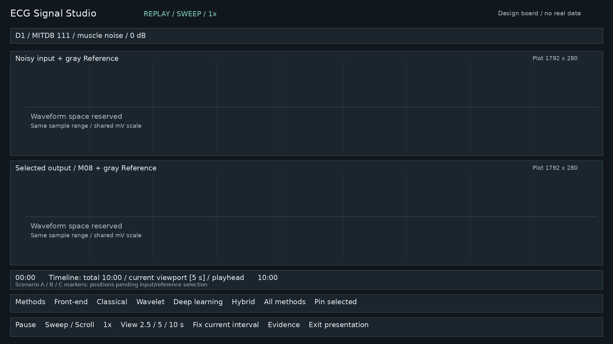
W2 · 정밀 비교·Reference
고정 구간을 유지하고 오른쪽 설명 패널을 엽니다. 회색 Reference는 모든 행에서 같은 세기·축을 씁니다.
1920 × 1080 기준 · 실제 plot 영역 37.6% · 벡터 원본
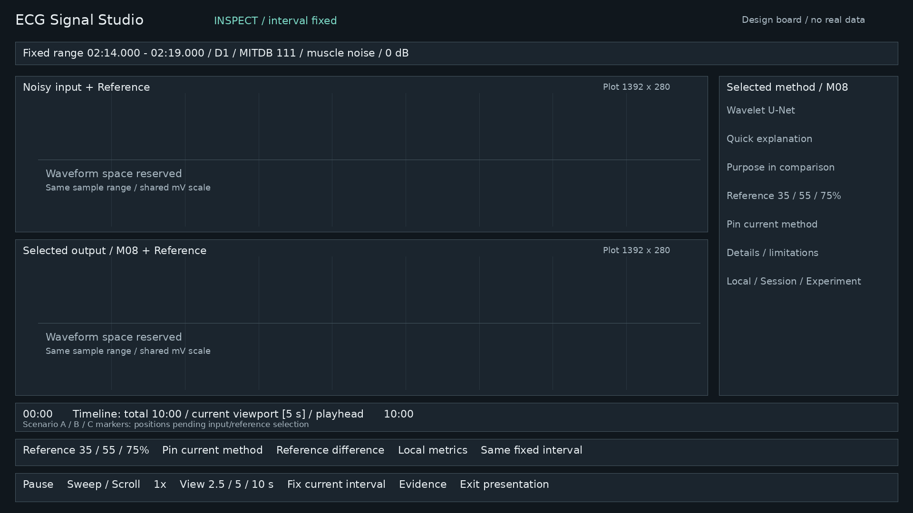
W3 · Reference와 차이
기본 파형 높이 280px를 유지합니다. 하단 방법 rail을 오른쪽 선택기로 합치고 별도 80px Lens를 확보합니다. 내부 trace는 64px입니다.
1920 × 1080 기준 · 실제 plot 영역 41.9% · 벡터 원본
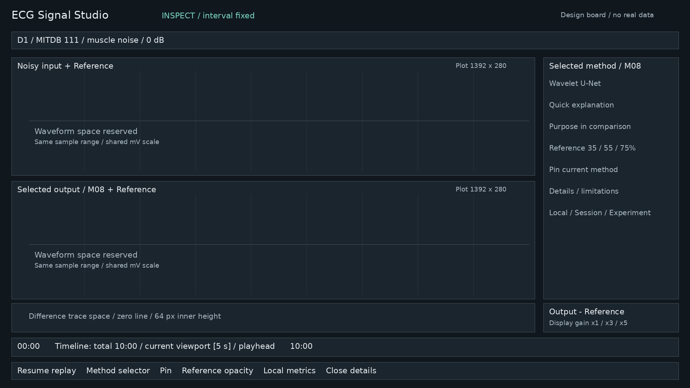
W4 · Pin 3행 비교
각 plot 내부 200px를 확보합니다. 고정 방법은 선택·hover로 바뀌지 않습니다. 3행과 Difference Lens를 함께 요구하면 별도 상세 영역을 펼칩니다.
1920 × 1080 기준 · 실제 plot 영역 51.8% · 벡터 원본
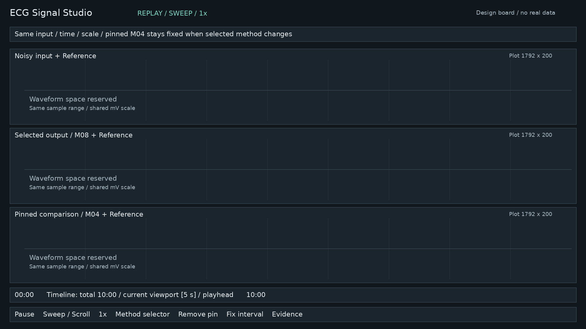
W5 · Attract와 인계
8–12초 대표 장면 반복임을 표시합니다. 첫 의미 있는 클릭/터치로 방금 보던 장면·시각에서 체험을 이어갑니다.
1920 × 1080 기준 · 실제 plot 영역 52.5% · 벡터 원본
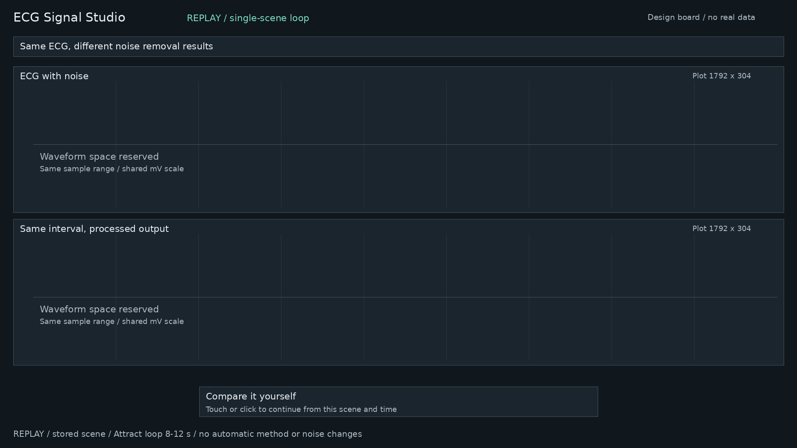
W6 · 시나리오 선택
A/B/C는 설명 목적이며 승자 보장이 아닙니다. 실제 timestamp는 입력·Reference 규칙을 먼저 고정한 뒤 선정합니다.
1920 × 1080 기준 · 실제 plot 영역 0.0% · 벡터 원본
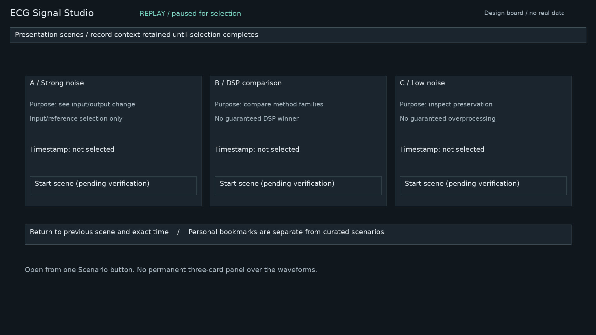
W7-P · 새 조건 준비 중
CURRENT는 이전 유효 데이터의 라벨입니다. 요청한 새 조건은 별도 pending 안내에만 나타납니다.
1920 × 1080 기준 · 실제 plot 영역 48.4% · 벡터 원본
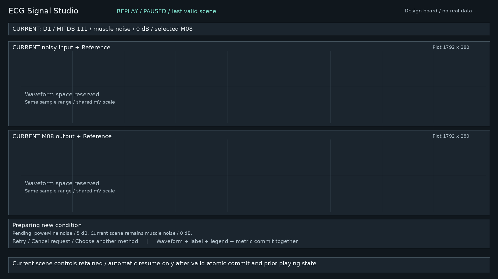
W7-E · 로딩 실패·재시도
현재 유효 파형을 남깁니다. Retry는 새 요청 ID로 실행하며 늦게 도착한 이전 응답은 폐기합니다.
1920 × 1080 기준 · 실제 plot 영역 48.4% · 벡터 원본
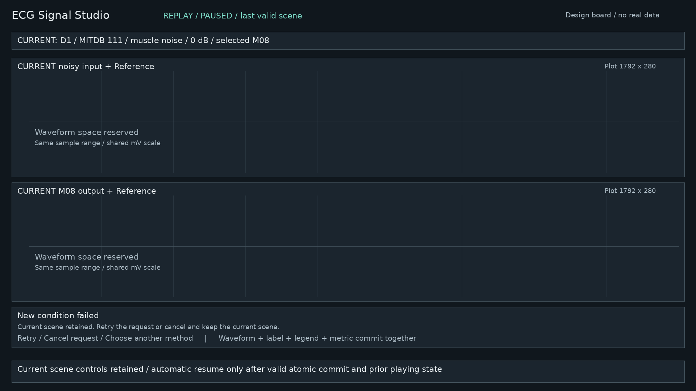
W7-M · 방법 출력 누락
M09 요청 실패 시 기존 M08을 M09로 표시하지 않습니다. 다른 방법 자동 대체도 하지 않습니다.
1920 × 1080 기준 · 실제 plot 영역 48.4% · 벡터 원본
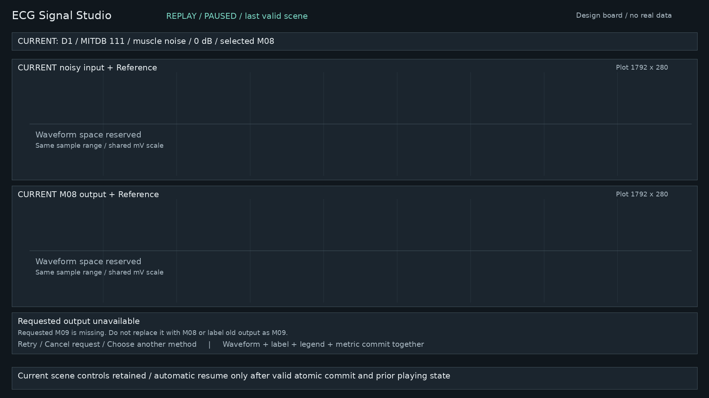
W8 · 1366×768
각 plot 내부 204px. 조건·방법은 펼침 선택기로 줄입니다. 3행을 요청하면 파형 내부 영역에 세로 스크롤을 허용해 행당 180px 이상을 보존합니다. 발표 기본은 같은 구간의 2행 A/B 전환입니다.
1366 × 768 기준 · 실제 plot 영역 48.8% · 벡터 원본
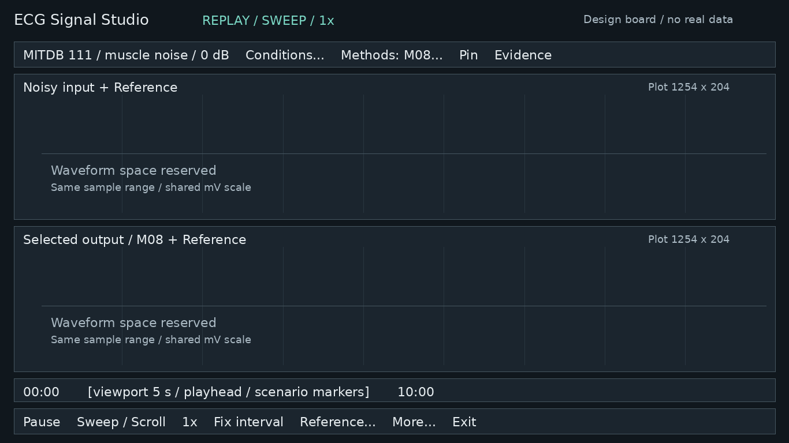
W9 · 터치 체험
기본 선택은 noise 하나입니다. 탭으로 방법 선택 후 Pin으로 지속 비교합니다. 필수 동작에 hover가 필요하지 않습니다.
1920 × 1080 기준 · 실제 plot 영역 48.4% · 벡터 원본
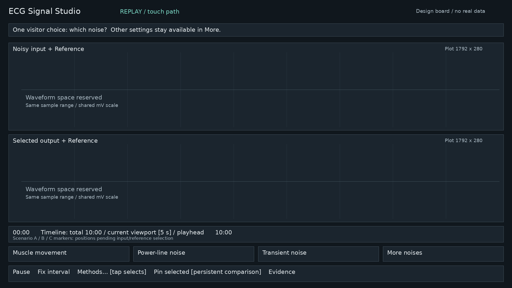
W10 · 근거·질의 응답
Local → Session → Experiment의 모집단·구간·정의를 각각 표시합니다. Experiment를 현재 600초 성능처럼 보이게 하지 않습니다.
1920 × 1080 기준 · 실제 plot 영역 31.1% · 벡터 원본
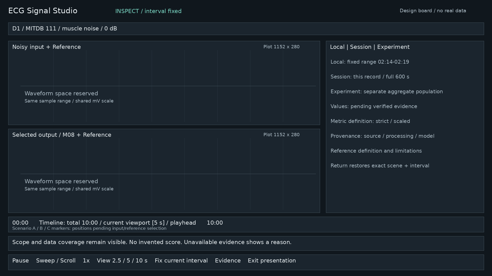